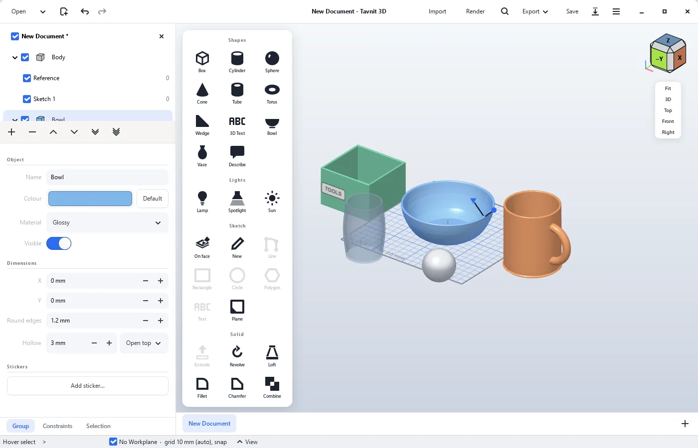

צורות מוכנות
קובייה, גליל, כדור, חרוט, צינור, טבעת, טריז, קערה, אגרטל וטקסט תלת-ממדי. לוחצים, והצורה עומדת על משטח העבודה.
ל-Windows 10 ו-11 · חינם · קוד פתוח
Tavnit 3D היא תוכנת תכנון תלת-ממד למדפסת, לבית ולתחביב. מוסיפים קובייה, קערה או ספל בלחיצה, קובעים מידות במילימטרים, נותנים צבע, חומר ומדבקה, ומייצאים קובץ STL להדפסה או מפיקים תמונה שנראית כמו צילום. מתחת לפני השטח זו תוכנת CAD פרמטרית מלאה, מבוססת על Dune 3D.
בהתקנה הראשונה Windows עשוי להציג אזהרה. זה צפוי - כך ממשיכים.

פשוטה כמו Tinkercad בהתחלה, ומדויקת כמו תוכנת CAD כשצריך.
קובייה, גליל, כדור, חרוט, צינור, טבעת, טריז, קערה, אגרטל וטקסט תלת-ממדי. לוחצים, והצורה עומדת על משטח העבודה.
לחיצה על צורה בוחרת אותה ופותחת חלונית עם המידות, המיקום, הצבע והחומר שלה. גוררים כדי להזיז, וגוררים את הידיות שעל החפץ כדי לשנות גובה, רוחב ועומק.
כל מידה היא מספר שאפשר לשנות בכל רגע, והחפץ מתעדכן. רשת עם הצמדה ושכפול ב-Ctrl+D עוזרים לסדר חלקים בדיוק.
מאחדים שתי צורות לאחת, מחסירים צורה כדי ליצור חור, או משאירים רק את החלק המשותף.
הופכים קופסה, גליל או קערה לחלולים בעובי דופן שבוחרים, פתוחים מלמעלה או מלמטה, ומעגלים את כל הקצוות, גם את השפה.
סאטן, מט, מבריק, מתכת וזכוכית שקופה. ותמונה משלכם, כמו לוגו או תווית, מודבקת על פני החפץ, גם על צד מעוגל.
מנורה, זרקור ושמש שמאירים את התצוגה, וכפתור Render שמפיק תמונה מרשימה עם צללים רכים, בעזרת Blender החינמית.
כותבים "ספל עם ידית" או "קערה כחולה", ו-Claude בונה את הצורות, שאפשר לערוך אחר כך כמו כל חפץ. צריך מפתח API של Claude.
משרטטים צורה דו-ממדית ישר על פאה של חפץ, ומושכים אותה החוצה. מרחק שלילי חותך פנימה.
STL למדפסת בלחיצה, STEP לתוכנות CAD, ו-glTF עם צבעים, חומרים ומדבקות ל-Blender, ל-PowerPoint ולאתרים. מייבאים STEP, IGES, glTF ו-OBJ עם הצבעים שלהם.
Ctrl+K, או פשוט מקלידים, ומקבלים כל פקודה עם המקום שלה בחלון וקיצור המקלדת שלה. אפשר לחפש גם בעברית.
בכל הפעלה התוכנה בודקת אם יצאה גרסה חדשה. לחיצה על "Update now" מורידה, מתקינה ומפעילה אותה מחדש.
לחיצה על תמונה מגדילה אותה. הממשק של התוכנה באנגלית.
Tavnit 3D היא גרסה מפוצלת (fork) של Dune 3D, תוכנת CAD בקוד פתוח שכתבו Lukas K. ותורמים נוספים, ברישיון GPL-3.0. היסודות שלה הם שלהם: מנוע הגאומטריה Open CASCADE, פותר האילוצים של SolveSpace והממשק ב-GTK 4. Tavnit 3D שומרת את כל היכולות של Dune 3D ומוסיפה מעליהן דרך עבודה פשוטה יותר, וגם בונה גרסה מוכנה להתקנה ב-Windows.
את רוב הקוד שנוסף ב-Tavnit 3D כתב Claude, מודל בינה מלאכותית של Anthropic. ההכוונה וההחלטות הן של Star: מה לבנות, איך זה צריך לעבוד, בדיקה בשימוש אמיתי ומה נכנס לגרסה. כל שינוי עובר בנייה ובדיקות אוטומטיות, וההיסטוריה המלאה גלויה ב-GitHub.
מצאתם בעיה ב-Tavnit 3D? דווחו אצלנו ולא בפרויקט המקורי. שיפורים כלליים שמתאימים גם ל-Dune 3D נשלחים אליו בחזרה כהצעות שינוי.
בפעם הראשונה שתפעילו את קובץ ההתקנה, סביר ש-Windows יציג מסך כחול שאומר שהוא "הגן על המחשב". זה לא אומר שמשהו לא בסדר. כך Windows מגיב לכל תוכנה חדשה של מפתח עצמאי. ככה ממשיכים:
Windows מכיר תוכנות לפי חתימה דיגיטלית - תעודה שמפתחים קונים בכמה מאות דולרים בשנה - ולפי מוניטין שנצבר מהרבה הורדות. Tavnit 3D היא פרויקט אישי וחינמי, ואין לה תעודה כזו. לכן האזהרה אומרת רק "Windows עוד לא מכיר את התוכנה הזו", ולא "נמצא בה משהו מסוכן".
כל שורת קוד גלויה ב-GitHub, וכל גרסה נבנית מהקוד הזה.
ההתקנה הרגילה היא למשתמש שלכם בלבד, ולא משנה את Windows או תוכנות אחרות.
אין חשבון ואין מעקב. התוכנה פונה לאינטרנט רק כדי לבדוק ב-GitHub אם יש גרסה חדשה, ואפשר לכבות את זה בתפריט.
לפני ההתקנה אפשר להעלות את הקובץ ל-VirusTotal, שבודק אותו בעשרות תוכנות אנטי-וירוס.
לכל גרסה ברשימה למטה מופיעה "טביעת אצבע" (SHA-256) של קובץ ההתקנה, להשוואה מול הקובץ שהורדתם.
מומלץ להוריד את הגרסה האחרונה. התקנה של גרסה חדשה מעל הקיימת שומרת את ההגדרות, והקבצים שלכם לא נוגעים בהם.
טוען את רשימת הגרסאות...
מחשב עם Windows 10 או 11, 64 ביט. עכבר עם גלגלת נוח במיוחד לסיבוב ולהגדלה של התצוגה.
כלום. Tavnit 3D חינמית לגמרי, בלי פרסומות. הקוד פתוח ברישיון GPL-3.0, כמו Dune 3D שעליה היא מבוססת.
לא, הממשק עצמו באנגלית, כמו ב-Dune 3D. האתר הזה ומסכי ההתקנה בעברית, והאתר קיים גם באנגלית.
בכל הפעלה התוכנה בודקת אם יצאה גרסה חדשה, ואם כן מופיע פס מעל אזור העבודה. לוחצים על "Update now", והתוכנה מורידה את הגרסה, מתקינה אותה ונפתחת מחדש. כדאי לשמור את הקבצים הפתוחים לפני כן. את הבדיקה האוטומטית אפשר לכבות בתפריט הראשי, ובכל רגע אפשר גם להוריד את הגרסה האחרונה מכאן ולהתקין מעל הקיימת.
את Blender, תוכנה חינמית שמתקינים בנפרד מ-האתר שלה. Tavnit 3D מוצאת אותה לבד, ומפעילה אותה ברקע כשלוחצים Render. עם כרטיס גרפי זה מהיר יותר, אבל עובד גם בלעדיו.
מפתח API של Claude, שמקבלים ב-Anthropic Console. השימוש מחויב שם לפי כמות, ובדרך כלל עולה סנטים בודדים לצורה. התיאור שכותבים נשלח ל-Anthropic כדי לבנות את הצורה, והמפתח נשמר רק במחשב.
STEP ו-IGES מתוכנות CAD, ו-glTF/GLB ו-OBJ מתוכנות תלת-ממד כמו Blender, כולל הצבעים והחומרים שלהם. כל צבע וחומר בקובץ הופך לחפץ נפרד שאפשר לשנות. חפצים מ-glTF ו-OBJ הם רשתות משולשים, ולכן אי אפשר לחבר אותם או לחסר מהם, אבל אפשר להזיז, לצבוע ולייצא.
כן, Tavnit 3D משתמשת באותו סוג קובץ (.d3ddoc). בכיוון ההפוך, קובץ ששמרתם ב-Tavnit 3D עלול לא להיפתח בגרסה ישנה של Dune 3D. התוכנה מתריעה על זה כשזה רלוונטי.
בהגדרות Windows, תחת "אפליקציות", בוחרים ב-Tavnit 3D ולוחצים "הסר התקנה". הקבצים ששמרתם לא נמחקים.
נשמח לשמוע. אפשר לפתוח דיווח בדף הבעיות ב-GitHub.